Über den Menüpunkt…
1 WinLine ADMIN
1 Archiv
1 Archiv reorganisieren
… können bestehende Archivdateien überarbeitet werden (Dokumente, die nicht in das Archiv gehören können entfernt bzw. vergessene Objekte können hinzugefügt werden). Dieses erfolgt mit Hilfe eines Assistenten, wobei in diesem per Button "Ok" bzw. Taste F5 ab Schritt 2 immer in den letzten Schritt gewechselt werden kann.
1. Schritt - Mandantenauswahl
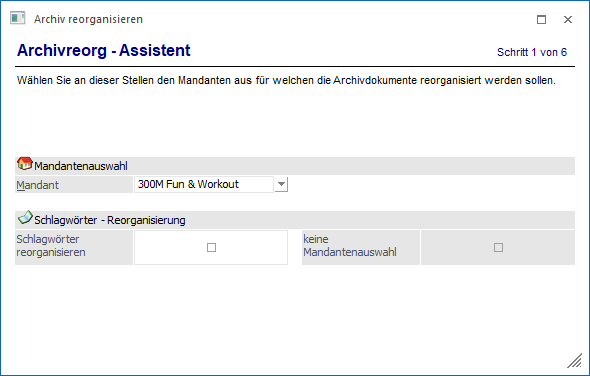
Mandantenauswahl
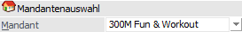
Ø Mandant
Zuerst muss aus der Auswahlliste der Mandant gewählt werden, für den die Archivdateien bearbeitet werden soll.
Schlagwörter - Reorganisierung
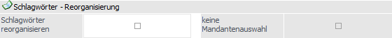
Ø Schlagwörter reorganisieren
An dieser Stelle kann entschieden werden, was bei dem Reorg generell passieren soll:
ü Option nicht aktiviert
Wen wird
eine Archiv-Reorganisation durchgeführt.
ü Option ist aktiviert
Es wird
nur eine Schlagwörter-Reorganisation durchgeführt. In diesem Fall kann die
Option "keine Mandantenauswahl" genutzt werden.
Ø keine Mandantenauswahl
Durch Aktivierung dieser Option kann angegeben werden, dass für die Schlagwörter-Reorganisation die Mandantenauswahl ignoriert werden soll.
Achtung
Wenn die Option "Schlagwörter reorganisieren" aktiviert wurde, wird bei Anwahl des Buttons "Vor" in einen separaten Schritt 6 gewechselt.
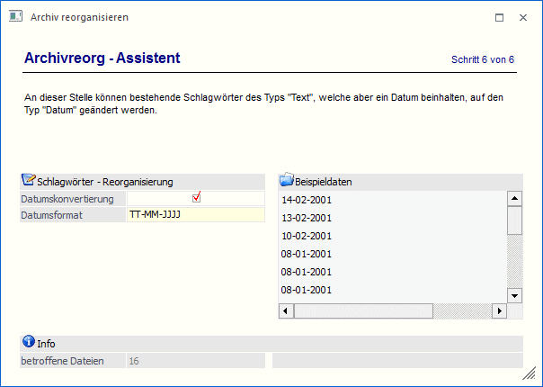
Im Feld "Datumskonvertierung" kann das entsprechende Datumsformat in Großbuchstaben eingegeben werden. Bleibt dieses Feld leer, so werden in der nebenstehenden Tabelle Beispieldaten angezeigt. Diese Beispieldaten können analysiert und daraus ein Datumsvorschlag für die Umsetzung herausgelesen werden.
Wird ein entsprechendes Datumsformat eingegeben, so wird der Beispieldatenbereich aktualisiert! Im Feld "betroffene Dateien" ist erkennbar, wie viele Datensätze mit dieser Auswahl gefunden werden.
Wird diese Auswahl mittels Button "Ok" gespeichert, so wird das errechnete Datum entsprechend in die Datenbank retour geschrieben.
Um zu überprüfen, ob es noch weitere nicht umgestellte Datumsschlagwörter gibt, kann das Feld "Datumsformat" einfach leer belassen werden.
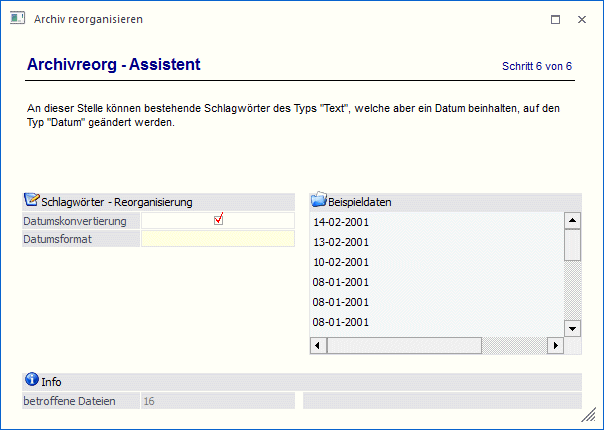
Gegebenenfalls trifft man auch auf Datumszeilen, die auch noch Texte beinhalten. Diese Vorlauf- oder auch Nachlauftexte müssen in Kleinbuchstaben eingegeben werden, damit das Programm zwischen dem eigentlichen Datumsformat (z.B. TT.MM.JJJJ) und dem Text unterscheiden kann.
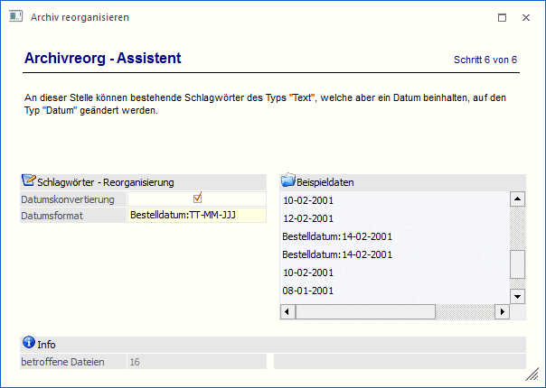
Werden mittels Button "Ok" die "gefundenen Treffer" gespeichert, so wird für diese Einträge das "korrekte" Datum beim Schlagwort zusätzlich abgespeichert.
2. Schritt - Archivwahl / SPA-Datei
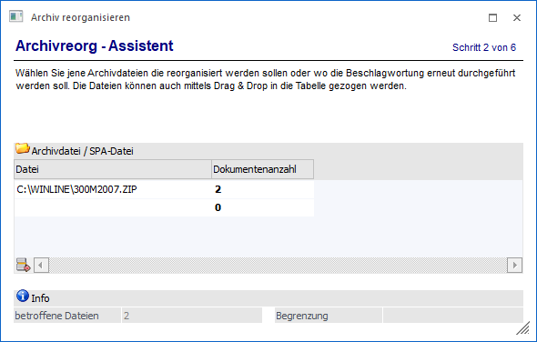
Ø Archivdatei / SPA-Datei
In die Tabelle können nun die Archivdateien eingegeben werden, die reorganisiert werden sollen. Hier können nun z.B. neue Dateien hinzugefügt werden, die ggf. vergessen wurden.
In der Spalte "Dokumentenanzahl" wird sofort angezeigt, wie viele Dokumente in einer ausgewählten Datei enthalten sind.
Hinweis
Diese Dateien können auch mit Drag & Drop aus dem Explorer übernommen werden. Des Weiteren steht der Dateidialog per F9 bzw. Anwahl des Lupen-Symbols zur Verfügung.
Ø Info
Im Infobereich wird die Summe der betroffenen Dateien angezeigt.
3. Schritt - Archivdateien aus Datenbank
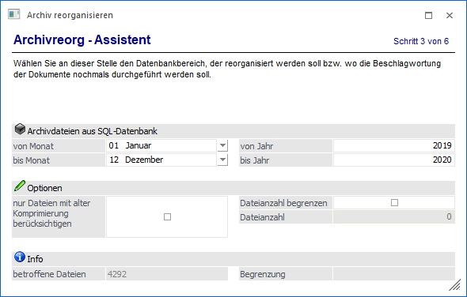
Archivdateien aus SQL-Datenbank
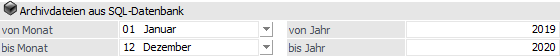
Ø Monat von / bis - Jahr von / bis
Wenn die Archivdateien auf dem SQL-Server gelagert werden, dann können hier die Monate eingeschränkt werden, für welche der Reorg durchgeführt werden soll. Wird ein Monat ausgewählt, dann kann auch auf das Jahr eingeschränkt werden.
Optionen
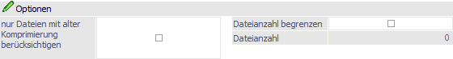
Ø Dateianzahl begrenzen
Hier kann auf einen Teil der ausgewählten Archivdokumente eingegrenzt werden.
Info
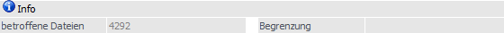
Ø betroffene Dateien / Brenzung
An dieser Stelle wird angezeigt, wieviele Einträge betroffen sind und ob eine Begrenzung definiert wurde.
4. Schritt - Einstellungen / Optionen
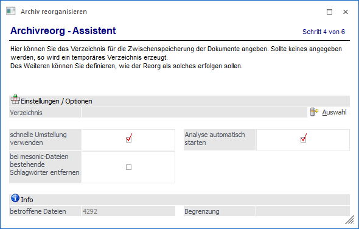
Einstellungen / Optionen
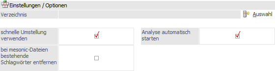
Ø Verzeichnis
Durch Anklicken des Buttons "Auswahl" kann ein Verzeichnis gewählt werden, in das die Archivdatei entpackt wird. Dieses Verzeichnis wird nur für die Dauer der Reorganisation benötigt und kann im Anschluss wieder gelöscht werden. Wird kein Verzeichnis angegeben, legt das System ein temporäres Verzeichnis an und löscht es am Ende der Reorganisation (nach erfolgter Analyse) wieder.
Hinweis
Durch Anklicken des Buttons "Verzeichnisse zurücksetzten" wird das hinterlegte Verzeichnis gelöscht und kann neu vergeben werden.
Ø schnelle Umstellung verwenden
Alle Dokumente, die bereits in der Datenbank gespeichert sind, werden während der Archivreorganisation sofort wieder in die Datenbank retour geschrieben und müssen somit in Folge nicht mehr durch die Archivanalyse.
Ø bei mesonic-Dateien bestehende Schlagwörter entfernen
Die Spool-Dateien werden durch die Archivanalyse neu beschlagwortet. Wurden jedoch manuell Schlagworte bei einem Dokument hinzugefügt, dann würden diese Schlagwörter bei aktivierter Option verloren gehen.
Ø Analyse automatisch starten
Ist diese Checkbox aktiviert, wird nach dem Kopieren der Daten auch gleich eine Analyse durchgeführt - damit muss der Menüpunkt nicht extra aufgerufen werden.
Info
Ø betroffene Dateien / Brenzung
An dieser Stelle wird angezeigt, wieviele Einträge betroffen sind und ob eine Begrenzung definiert wurde.
5. Schritt - Zusammenfassung
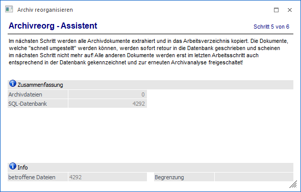
In diesem Schritt wird eine Übersicht geben, wieviel Einträge insgesamt Reorganisiert werden.
Achtung
Bei Anwahl des Buttons "Vor" wird der Reorg bereits gestartet. Wenn durch die Option "schnelle Umstellung verwenden" keine Archiveinträge mehr auf der Festplatte zurückbleiben, so wird der 6. Schritt nicht mehr angezeigt.
6. Schritt - Dokumente
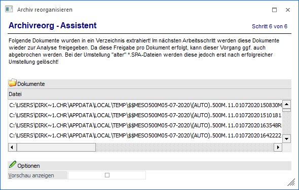
Kurze Info, welche Dokumente reorganisiert werden.
Ø Vorschau anzeigen
Durch Aktivieren dieser Checkbox können die entsprechenden Archiveinträge in einem eigenen Vorschaufenster angezeigt werden.
Buttons
Ø Ok
Durch Drücken des Buttons "Ok" bzw. der Taste F werden alle in der Tabelle angeführten Dateien wieder ins Archivverzeichnis kopiert und das Fenster geschlossen.
Hinweis
Um aus den entstandenen einzelnen Dateien wieder eine Archivdatei zu erzeugen, muss eine Analyse durchgeführt werden (sofern nicht die Option "Sofortanalyse" in den Archiv-Parametern aktiviert ist).
Ø Ende
Durch Anwahl des Buttons "Ende" bzw. der Taste ESC wird das Fenster geschlossen.
Ø Verzeichnisse zurücksetzen (nur im 4. Schritt)
Durch Anklicken des Buttons "Verzeichnisse zurücksetzten" wird das hinterlegte Verzeichnis gelöscht und kann neu vergeben werden.
Ø Zurück / Vor
Mit Hilfe dieser Buttons kann zwischen den Schritten des Assistenten navigiert werden.